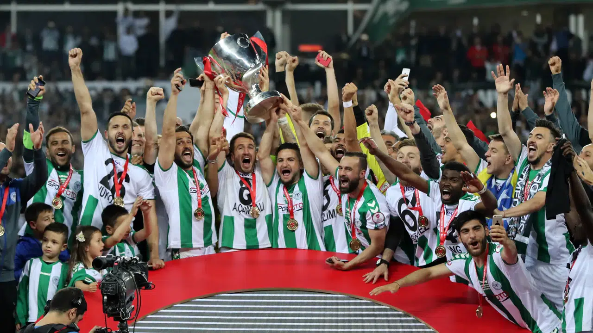

KONYASPOR MİRASI
Konyaspor'un 1922'den 2026'ya uzanan başarı öyküsü.

Çifte Kupa Mirası
Konya şehrinin en büyük sportif hazinesi, 2017 yılında kazanılan iki dev kupadır.
- 🏆 Türkiye Kupası: 2016-2017 Sezonu Şampiyonu
- 🏆 Süper Kupa: 2017 Yılı Şampiyonu
Konyaspor, bu başarılarla Anadolu'nun "Kupa Beyi" unvanını almış ve Avrupa arenalarında şehrimizi gururla temsil etmiştir.
Yıl Yıl Başarı Yolculuğu
1922 Kulübün temelleri Konya Gençlerbirliği adıyla atıldı.
1988 Tarihinde ilk kez Süper Lig'e yükselme başarısı gösterdi.
2016 Süper Lig'i 3. bitirerek ilk kez doğrudan Avrupa Ligine gitti.
2017 Altın Çağ: Hem Türkiye Kupası hem Süper Kupa müze eklendi.
2022 100. yılında ligi yine 3. sırada bitirerek istikrarını kanıtladı.
2024 Yenilenen kadrosuyla Süper Lig'in vazgeçilmez gücü olduğunu gösterdi.
2026 Modern tesisleri ve güçlü altyapısıyla Anadolu'nun lideri olmaya devam ediyor.
Geleceğe Miras: Konya Büyükşehir Stadyumu